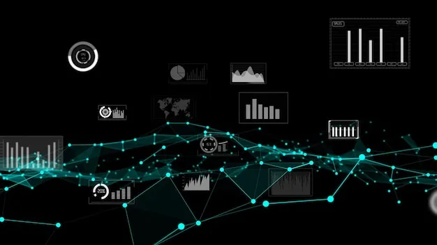

Remote accessibility:
Virtual labs can be accessed remotely from anywhere with an internet connection. This accessibility eliminates constraints of physical infrastructure, allowing students to practice and learn at their own pace at any location. Additionally, it facilitates collaborative learning as students can access the lab simultaneously from different locations.

Visual Representations:
Visual representations in virtual labs can simplify complex structures. For example, displaying sorting algorithms step-by-step or demonstrating how different data structures handle data organization and retrieval visually helps learners comprehend the intricacies involved. Virtual labs also incorporate interactive visualizations of data

Interactive Learning:
Virtual labs often incorporate interactive visualizations that allow students to manipulate data structures directly. This hands-on approach enables them to observe the effects of their actions, enhancing retention of conceptsures like stacks.